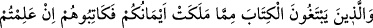

“ölü iken” yâni kendi irâdesiyle nefsânî ve hayvânî sıfatlarından geçmiş iken “biz
onu” rubûbiyet nûruyla “dirilttik. Ona, kendisiyle insanlar arasında yürüyeceği bir
nûr verdik.” (el-En’âm, 6/122) Yâni o Allah’ın nûruyla yürür. Artık o Allah’ın verdiği
bir hayatla dirilmiştir, asla ölmez. Ancak bir yerden diğer yere intikal eder, anlamındaki
âyetin gereğidir.
“Eğer bunlar” tâlib olan müridler “fakir iseler,” ilâhî feyzi kabûle istîdadları yoksa
“Allah” feyzi kabûle istîdâdlı kimseler kılarak “kendi lütfu ile onları zenginleştirir.”
Çünkü kuldan Allah’a doğru giden yol kapalı, Allah’tan kula doğru gelen yol ise dâimâ
açıktır. Muhakkak O Fettâh yâni açan, ayıran, hükme bağlayandır. Anahtar sadece O’nun
elindendir. “Allah,” feyzini kabûle isitidadlı olmak üzere kalblerin rahimleri için
(lütfu) “geniş olan ve” onlara feyzin isâbetini “bilendir.”
33. Evlenme imkânını bulamayanlar ise Allah, lütfu ile kendilerini varlıklı
kılıncaya kadar iffetlerini korusunlar. Ellerinizin altında bulunanlardan (köleler ve
câriyelerden) mükâtebe yapmak isteyenlerle, eğer kendilerinde bir hayır (kabiliyet
ve güvenilirlik) görüyorsanız, hemen mükâtebe yapın. Allah’ın size vermiş olduğu
malından siz de onlara verin. Dünya hayâtının geçici menfaatlerini elde edeceksiniz
diye, namuslu kalmak isteyen câriyelerinizi fuhşa zorlamayın. Kim onları zor
altında bırakırsa, bilinmelidir ki zorlanmalarından sonra Allah (onlar için) çok
bağışlayıcı ve merhametlidir.
“Evlenme imkânını bulamayanlar ise, Allah, lütfu ile kendilerini varlıklı kılıncaya”
bu sâyede evlenme imkânı buluncaya“kadar iffetlerini korusunlar.” Önceki âyette
fakirlerin evlenmelerinin câiz olduğunu bildirdikten sonra bu âyette evlenebilmek için
gerekli imkânları bulamayanlara, onlara en lâyık olan bir yolu; evleninceye kadar
namuslarını koruma yolunu tavsiye etmektedir.
İffet, nefiste onu şehvetin galebesinden alıkoyacak bir hâlin hasıl olmasıdır. “
”
bir tür çalışma ile ve zorla iffeti elde eden kimsedir. “
” ise iffetli olmayı
istemektir. Buna göre âyetin mânâsı şöyledir: Mehir ve nafaka gibi evlilik için gerekli
şartları bulunmayanlar, Allah, lütfuyla kendilerini zengin kılıp evlenebilecek derecede
mâlî genişliğe kavuşuncaya kadar şehvetlerini kırmaya ve iffetli olmaya çalışsınlar.
Mehir ve nafaka olmadan sadece akid yapmanın ve evlenmenin bir mânâsı yoktur.